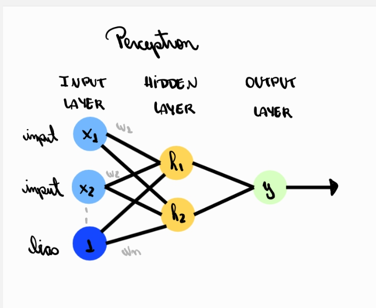
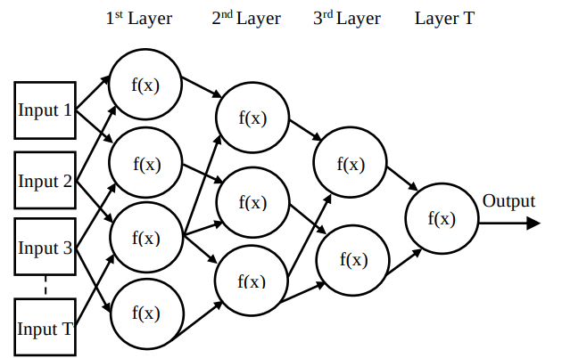
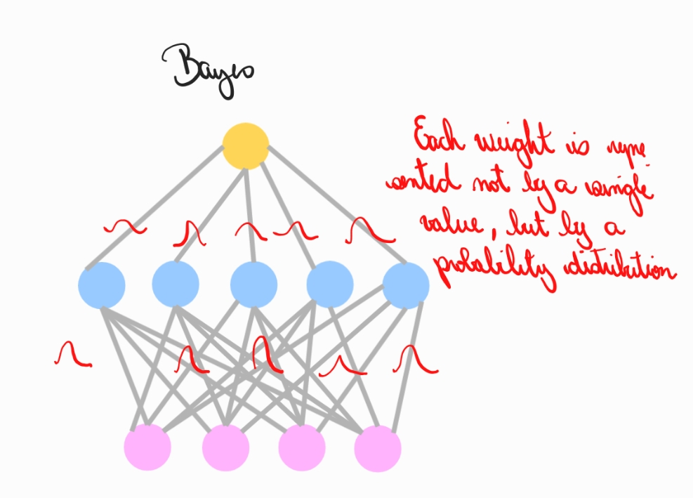
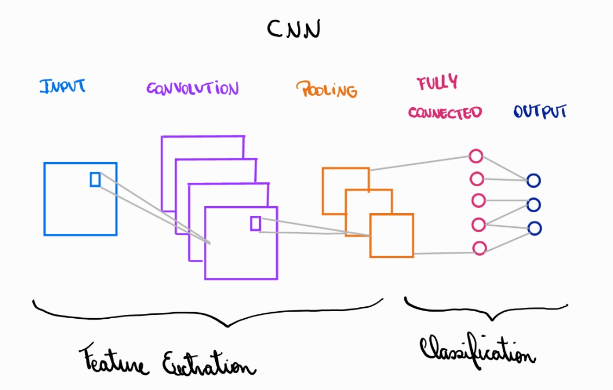
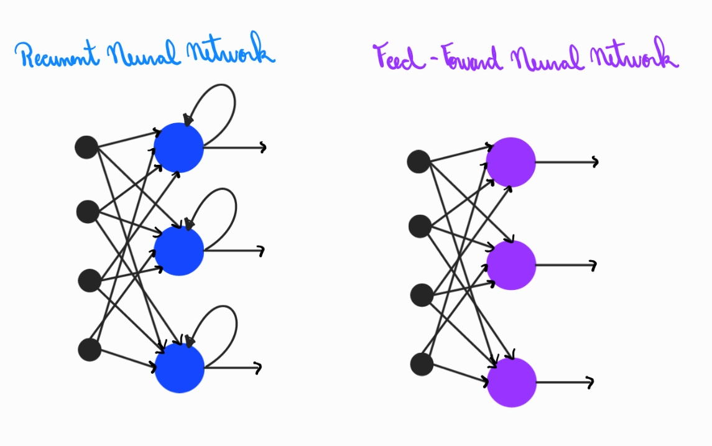

Index
1. MLP
A Multilayer Perceptron (MLP) is the simplest form of a deep neural network. It consists of layers of neurons where each layer transforms its inputs through weighted sums and activation functions. Despite its simplicity, an MLP can approximate a wide range of nonlinear functions and serves as the foundational architecture for many modern models.
An MLP is organized into three main parts: an input layer, one or more hidden layers, and an output layer. Each neuron in a layer connects to all neurons in the next layer, forming what is called a fully connected or dense structure. During a forward pass, each neuron computes a weighted sum of its inputs and applies an activation function to introduce non-linearity. Without these nonlinearities, the entire network would reduce to a single linear operation.
Training an MLP relies on backpropagation, which computes gradients for all weights, and an optimizer that updates these parameters to reduce the loss. Through repeated exposure to data, the network adjusts its internal connections to capture patterns and relationships.
MLPs are flexible but can become inefficient for high-dimensional or structured data, such as images or sequences, because they ignore spatial or temporal relationships. This limitation motivated the development of more specialized architectures like CNNs and RNNs. Still, the MLP remains a fundamental model: it is simple, expressive, and a perfect entry point to understanding neural network mechanics.
The bias term in a perceptron is a constant input (usually fixed at 1) whose only purpose is to allow the neuron to shift its decision boundary. Without this bias, the neuron could only learn functions that pass through the origin, which would severely limit its flexibility.
Think of the perceptron as computing:
\[ Y = f(w_1 x_1 + w_2 x_2 + \cdots + w_n x_n + b) \]
The bias b acts like an adjustable offset. It lets the neuron decide where the activation threshold should lie, independent of the input values. Without this offset, the model could only separate classes using hyperplanes anchored at zero, which is almost never what we want in real data.
One way to implement the bias is to treat it as an extra input whose value is always 1. In that case, the bias weight behaves exactly like the other weights, and training updates it using the same gradient rules. This trick simplifies the math and makes the implementation cleaner:
\[ W_0 = b,\quad x_0 = 1 \]
By including a bias, the perceptron can shift its activation boundary in any direction, making it much more expressive and capable of fitting a wider range of patterns.
2. GMDH
The Group Method of Data Handling (GMDH) is a self-organizing neural network model that builds its own architecture during training. Instead of starting with a fixed number of layers or neurons, GMDH creates, selects, and combines simple models to form more complex ones, keeping only the structures that improve prediction.
GMDH trains by generating many small polynomial models, often using pairs of input features at a time. Each model predicts the output using a polynomial function, and these candidates are evaluated on a separate validation set to avoid overfitting. Only the best-performing models are kept and become inputs for the next layer. Through this selection process, the network grows layer by layer, discarding weak models and reinforcing strong ones.
The key idea is that the architecture is not predefined. Instead, the network decides how many layers to build, which models to keep, and when to stop expanding. Training ends when adding more layers no longer improves validation performance. This makes GMDH one of the earliest examples of automated model selection and structural learning.
Although modern deep learning rarely uses GMDH directly, its concepts remain influential. Ideas such as layer-wise construction, validation-based selection, and automatic complexity control reappear in contemporary methods, including neural architecture search and some regularization strategies. GMDH demonstrates that networks can be designed to organize and refine themselves, without relying entirely on manual architectural choices.
GMDH was the foundational model for my research at the GICS laboratory during my years at UFPR. Over the course of three years, I authored six papers in which I developed GMDH-based neural networks for the linearization of power amplifier output signals. Read more about my research.
3. BNNs
Bayesian Neural Networks (BNNs) extend standard neural networks by treating their weights as probability distributions instead of fixed values. This allows the model to express uncertainty about its predictions, making BNNs especially useful when data is limited, noisy, or when decisions require confidence estimates.
In a traditional neural network, each weight has a single learned value. In a Bayesian network, each weight has a distribution—usually parameterized by a mean and a variance—that reflects how uncertain the model is about that parameter. During training, the goal is not simply to find the best individual weights but to learn the entire distribution of possible weight values that fit the data.
To achieve this, BNNs use Bayesian inference. The model starts with a prior belief about the weights and updates this belief using the observed data to obtain a posterior distribution. Exact inference is impossible for deep networks, so practical methods rely on approximations such as variational inference or Monte Carlo sampling. These methods produce samples of weights that can be used to estimate prediction uncertainty.
When making a prediction, the network does not rely on a single forward pass. Instead, it samples several sets of weights and averages the predictions. If the samples agree, the model reports high confidence; if they vary widely, the model signals uncertainty. This behavior makes BNNs valuable in safety-critical applications, scientific measurements, and situations where understanding how sure the model is matters as much as the prediction itself.
Although BNNs are computationally heavier than classical networks, their ability to quantify uncertainty provides a powerful perspective on learning. They link neural networks with probabilistic reasoning and open paths to more reliable and interpretable predictive models.
4. CNNs
Convolutional Neural Networks (CNNs) are neural networks designed to learn patterns from spatially structured data, especially images. Instead of using fully connected layers for everything, CNNs exploit the idea of local receptive fields and shared weights, making them far more efficient and effective for visual tasks.
A CNN processes an image by applying small filters that slide across the input, computing local features such as edges, textures, or color variations. Each filter produces a feature map that highlights the presence of certain patterns in different regions of the image. Because the same filter is used everywhere, CNNs learn features that generalize well and require far fewer parameters than dense architectures.
As data moves through deeper convolutional layers, the network learns increasingly abstract representations. Early layers capture simple structures like edges or corners, middle layers detect shapes or textures, and deeper layers identify high-level concepts such as objects. Pooling layers are often used to reduce spatial resolution, helping the network focus on essential information and making computation more efficient.
Training a CNN follows the same principles as other neural networks: backpropagation computes gradients, and an optimizer updates the filters to improve performance. What makes CNNs particularly powerful is their ability to capture spatial hierarchies—patterns made of patterns—which is something fully connected networks struggle to learn from raw images.
CNNs became the foundation of modern computer vision. They power applications such as image classification, object detection, face recognition, medical imaging, and many other tasks where understanding visual structure is essential. Their efficiency and representational strength make them one of the most influential architectures in deep learning.
The diagram shows how a Convolutional Neural Network transforms an input image into a final classification. The first part, called feature extraction, begins with convolution layers that slide small filters over the image to detect local patterns such as edges or textures. Each filter produces a feature map, which is why several stacked layers appear in the figure. After that, pooling reduces the spatial size of these maps, keeping only the most important information and making the representation more compact.
In the second part, classification, the pooled features are flattened and passed into fully connected layers, which combine all extracted patterns to produce the final output. This stage behaves like a traditional multilayer perceptron, using the learned features to decide the class of the input image.
5. RNNs
Recurrent Neural Networks (RNNs) are designed to process sequential data by keeping a form of memory about past inputs. Instead of treating each input independently, an RNN uses information from previous time steps to influence its current output, making it suitable for text, speech, time series, and any data with temporal structure.
An RNN works by looping information through a hidden state. At each step of the sequence, the network receives a new input and updates its hidden state based on both the new information and the state from the previous step. This allows the model to learn dependencies over time—for example, the meaning of a word often depends on the words that came before it. Because the same weights are applied at every step, RNNs naturally handle sequences of varying lengths.
Training an RNN uses backpropagation through time (BPTT), which unfolds the sequence and computes gradients across the entire temporal chain. This process reveals a major challenge: gradients can shrink or explode as they propagate over many steps. As a result, standard RNNs struggle with long-term dependencies and may lose information quickly, especially when sequences are long or relationships span many time steps.
To address these issues, more advanced recurrent architectures were developed, such as LSTMs and GRUs. These models include gating mechanisms that control how information is stored, forgotten, or passed forward, giving them the ability to learn longer-range patterns more reliably. Despite being partially replaced by Transformers in modern applications, RNNs and their gated variants remain important for understanding sequential learning and the evolution of neural architectures.
RNNs introduced the idea that neural networks can have memory and handle time-dependent data—a concept that transformed natural language processing, speech recognition, and many other fields. They remain a key stepping stone between classical models and the sequence architectures used today.
5.1 LSTM (Long Short-Term Memory)
Long Short-Term Memory (LSTM) networks are a special type of RNN designed to capture long-range dependencies by controlling how information is stored and forgotten over time. Their key innovation is a set of gating mechanisms that protect important signals from vanishing as they pass through many time steps.
An LSTM cell contains three gates: the forget gate, which decides what past information to discard; the input gate, which determines what new information to store; and the output gate, which selects what part of the current cell state becomes the hidden output. This structured control flow allows the model to maintain stable internal memory across long sequences, overcoming the vanishing gradient issues of standard RNNs.
The cell state acts like a conveyor belt that carries information forward with minimal modification, while the gates adjust the flow based on the current input and previous hidden state. This architecture gives LSTMs the ability to model complex temporal patterns such as long-term context in language, sustained trends in time series, or dependencies spread across entire sequences.
Although computationally heavier than simple RNNs, LSTMs became the standard for sequential modeling for many years, powering applications in translation, speech recognition, handwriting generation, and many other tasks. They remain an important model for understanding how memory can be learned and controlled within neural networks.
5.2 GRU (Gated Recurrent Unit)
Gated Recurrent Units (GRUs) simplify the LSTM architecture while keeping its ability to learn long-term dependencies. They use two gates instead of three, reducing complexity and making training faster while still maintaining effective control over memory.
A GRU merges the input and forget gates into a single update gate, which decides how much of the previous hidden state should remain and how much new information should be incorporated. It also includes a reset gate that determines how much past information to ignore when computing a new candidate state. These gates allow the GRU to balance memory retention and flexibility without the separate cell state used in LSTMs.
Because GRUs have fewer parameters, they are often easier to train and sometimes perform as well as or even better than LSTMs on practical tasks. They excel in problems where sequences are moderately long or where computational efficiency matters. Despite being simpler, they still manage to capture dependencies across time and handle context in a controlled way.
GRUs represent an elegant middle ground between basic RNNs and the more complex LSTMs. Their design shows how gating mechanisms alone can significantly improve the stability and capability of recurrent networks.